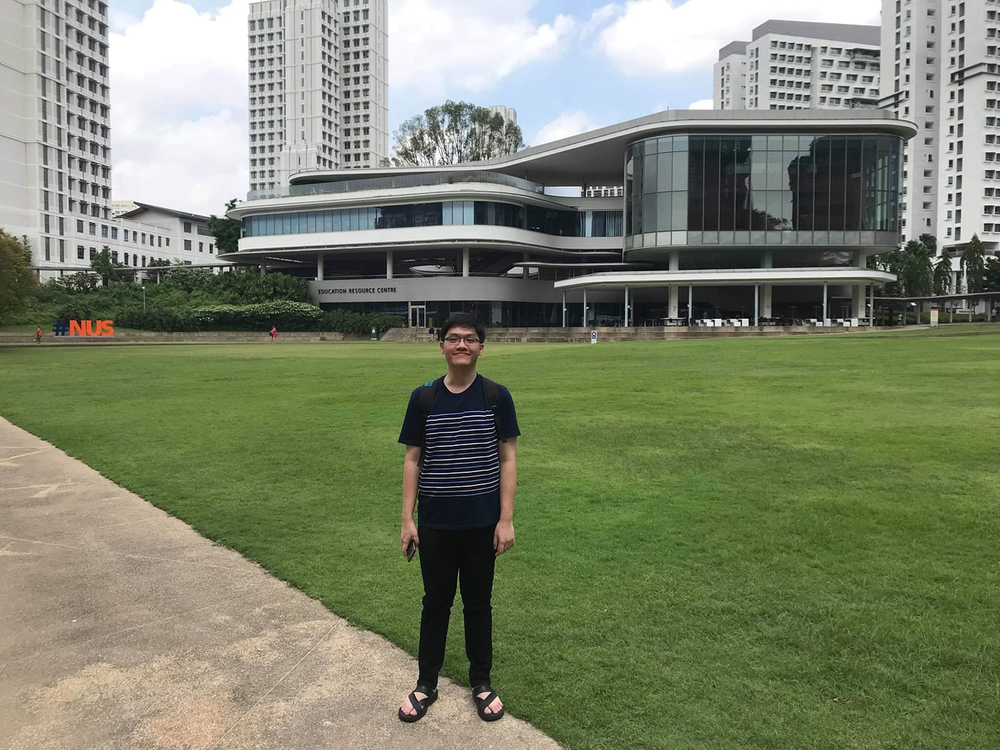

Burin Amornpaisannon
burin dot amorn at gmail dot com
Education
- Ph.D. National University of Singapore, August 2019 - Present
- B.E. Chulalongkorn University, 2015 - 2019
Experience
- Research Assistant, National University of Singapore, August 2019 - Present
- Hardware Systhesis Lab Teacher Assistant, Chulalongkorn University, January 2019 - May 2019
- European Organization for Nuclear Research (CERN) Associated Member, Chulalongkorn University, August 2018 - July 2019
- Digital IC Design Intern, Silicon Craft Technology, May - July 2018
- Independent Computer Architecture Researcher, Chulalongkorn University, January - May 2018
- Member, CU Digital Design and Verification Laboratory, Chulalongkorn University, January - May 2017
- Research Assistant, CU Intelligent System Laboratory 2, Chulalongkorn University, May - August 2017
Co-Curricular Activities
- Head of Academic Team, Fundamentals of Engineering Camp (FECamp), Chulalongkorn University
- Academic Member, Larngear Camp, Chulalongkorn University
Award
- Singapore International Graduate Award (SINGA)
Additional Information
Languages: Thai, English
Interests: Computer Architecture, Digital Systems, Physical Attacks, Neuromorphic Computing
Skills: C++, C, Verilog, Chisel, FIRRTL, Bash scripting, Synopsys EDA tools, SystemVerilog, Python, Scala, Linux, Windows, Latex
Publications
B. Amornpaisannon, A. Diavastos, L. -S. Peh, and T. E. Carlson. “Laser Attack BenchmarkSuite”. In:2020 IEEE/ACM International Conference On Computer Aided Design (ICCAD).2020, pp. 1–9.
Srivatsa P, Kyle Timothy Ng Chu, Burin Amornpaisannon, Yaswanth Tavva,Venkata Pavan Kumar Miriyala, Jibin Wu, Malu Zhang, Haizhou Li, and Trevor E. Carlson.YouOnly Spike Once: Improving Energy-Efficient Neuromorphic Inference to ANN-Level Accuracy.2020. arXiv:2006.09982 [cs.NE].